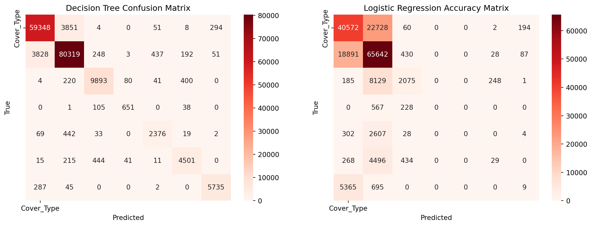

Code
import os
import numpy as np
from sklearn.cluster import KMeans
import matplotlib.pyplot as plt
import pandas as pd
import seaborn as sns
from sklearn.metrics import accuracy_score, classification_report, confusion_matrix
from sklearn.datasets import fetch_covtype
from sklearn.tree import DecisionTreeClassifier
from sklearn.linear_model import LogisticRegression
from sklearn.model_selection import train_test_split
import warnings
warnings.filterwarnings('ignore')
covtype= fetch_covtype()
X, y = covtype.data, covtype.target
# Split data into train and test
X_train, X_test, y_train, y_test = train_test_split(X, y, test_size=0.3, random_state=42)
# Train, fit and predict logistic regression model
lr = LogisticRegression(random_state=42)
lr.fit(X_train, y_train)
y_pred_lr = lr.predict(X_test)
# Evaluate the classifiers
accuracy_lr = accuracy_score(y_test, y_pred_lr)
conf_matrix_lr = confusion_matrix(y_test, y_pred_lr)
# Train, fit and predict Decision Tree model
dt = DecisionTreeClassifier(random_state=42)
dt.fit(X_train, y_train)
y_pred_dt = dt.predict(X_test)
# Evaluate the classifiers
accuracy_dt = accuracy_score(y_test, y_pred_dt)
conf_matrix_dt = confusion_matrix(y_test, y_pred_dt)
print(f'Decision Tree Accuracy: {accuracy_dt:.2f}')
print(f'Logistic Regression Accuracy: {accuracy_lr:.2f}')
fig, axes = plt.subplots(1, 2, figsize=(15, 5))
# Decision Tree Confusion Matrix
sns.heatmap(conf_matrix_dt, annot=True, fmt='g', cmap='Reds', xticklabels=covtype.target_names, yticklabels=covtype.target_names, ax=axes[0])
axes[0].set_title('Decision Tree Confusion Matrix')
axes[0].set_xlabel('Predicted')
axes[0].set_ylabel('True')
# Random Forest Confusion Matrix
sns.heatmap(conf_matrix_lr, annot=True, fmt='g', cmap='Reds', xticklabels=covtype.target_names, yticklabels=covtype.target_names, ax=axes[1])
axes[1].set_title('Logistic Regression Accuracy Matrix')
axes[1].set_xlabel('Predicted')
axes[1].set_ylabel('True')
plt.show()Decision Tree Accuracy: 0.93
Logistic Regression Accuracy: 0.62